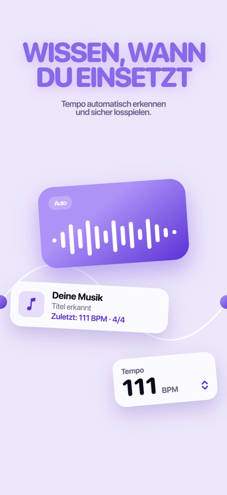
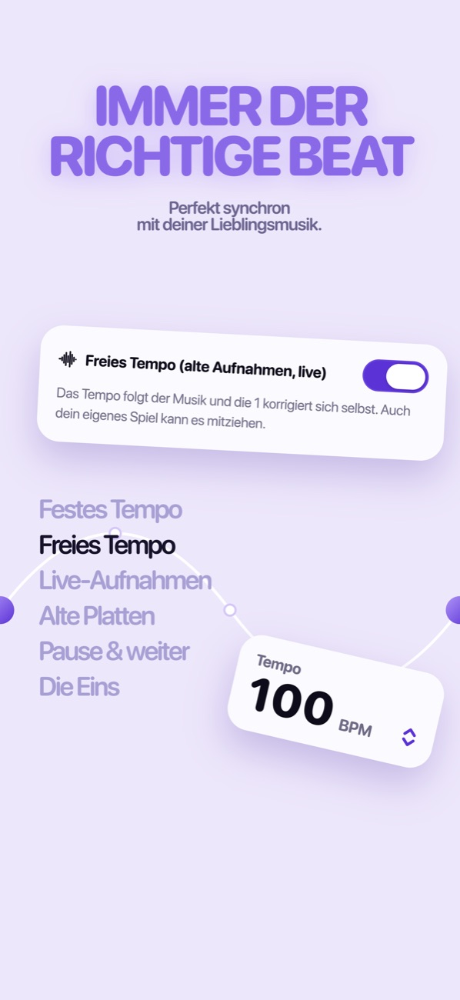
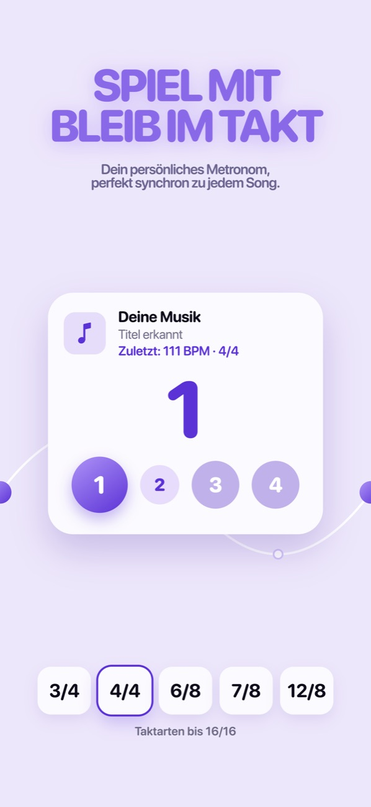
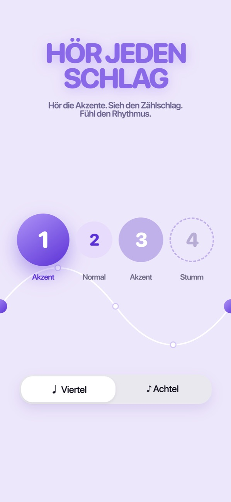

So funktioniert es
Musik abspielen
Aus einem Lautsprecher, von einer Band oder aus einer anderen App.
Zuhören lassen
Nach etwa 6–10 Sekunden sind Tempo, Takt und die 1 erkannt. Songs, die die App schon einmal gehört hat, erkennt sie nach etwa 5 Sekunden wieder, auch ohne Internet.
Mitspielen
Das Metronom klickt im Takt, die 1 höher und lauter. Auf Wunsch auch in Achteln.
Bleibt auf der Musik, solange sie läuft.
Festes Tempo
Nach dem Einrasten bleiben Tempo und 1 fest. Mitspielen, Singen oder Klatschen bringt das Metronom nicht durcheinander.
Freies Tempo
Für alte oder Live-Aufnahmen, deren Tempo schwankt. Das Metronom geht mit der Musik mit.
Wiedererkennung offline
Gehörte Songs starten beim nächsten Mal sofort mit dem richtigen Takt, auch bei schwankendem Tempo.
Pause und Einsetzen
Mit Pause schweigt das Metronom, folgt der Musik aber still weiter. Einsetzen bringt es genau im Takt zurück.
Für Kopfhörer gemacht
Klick-Vorlauf gegen Bluetooth-Verzögerung. Die Klicks laufen wahlweise über den iPhone-Lautsprecher.
Manuell
Ein normales Metronom mit 30–300 BPM, Taktarten bis 16/16 und Tap-Tempo. Funktioniert auch ohne Mikrofon.
Wissen, wann du einsetzt.
Betonte 1, Viertel oder Achtel. Jeder Schlag lässt sich betonen, normal spielen oder stumm schalten.




Kein Konto. Keine Werbung. Kein Tracking.
Datenschutzerklärung lesen- Mikrofon
- Der Ton wird auf deinem Gerät ausgewertet. Es werden keine Aufnahmen gespeichert oder verschickt.
- Song-Erkennung
- Ein Audio-Fingerabdruck (kein Audio) geht an Shazam (Apple).
- Tempo-Daten
- Für einen erkannten Song werden Titel und Interpret an GetSongBPM gesendet.
Support für AutoMetronom
Beschreibe kurz dein Anliegen. Wir melden uns so schnell wie möglich und verwenden deine Angaben ausschließlich zur Bearbeitung deiner Anfrage.
Damit wir helfen können: Nenne bitte Gerät, iOS-Version, App-Version, den gespielten Song und eine kurze Beschreibung. Ein Screenshot ist oft hilfreich.
Rechtliche Texte
Wähle die Region, in der du AutoMetronom nutzt.
- SchweizDatenschutzerklärungNutzungsbedingungenCopyright
- Europäische Union und EWRDatenschutzerklärungNutzungsbedingungenCopyright
- Vereinigte StaatenDatenschutzerklärungNutzungsbedingungenCopyright
- FestlandchinaDatenschutzerklärungNutzungsbedingungenCopyright
- Andere RegionenDatenschutzerklärungNutzungsbedingungenCopyright